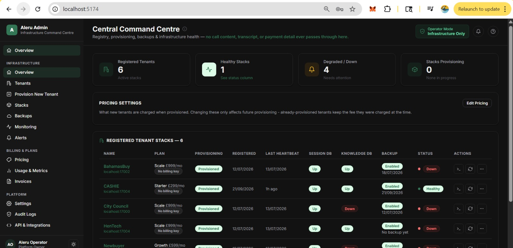

Start with a conversation
Specialist voice agents route billing, hardship and dispute enquiries, answering from the organisation’s own approved knowledge base.
BUILT IN MANCHESTER. DESIGNED FOR TRUST.
AI voice operations and payment infrastructure for regulated organisations. Connect the moment a customer agrees to pay with the workflow that makes it happen.
Working prototype available for demonstration.
“Ready to make that payment?”
THE GAP WE CLOSE
A customer says yes. Then an SMS link or a transfer interrupts the moment. Aleru is built to connect conversation, payment and confirmation within the same call.
Specialist voice agents route billing, hardship and dispute enquiries, answering from the organisation’s own approved knowledge base.
The call enters a dedicated keypad payment pathway outside the AI audio path. The customer’s payment provider processes the transaction.
The verified payment result returns to the agent. Sensitive actions wait for a named human reviewer, with events recorded in an audit chain.
TWO WAYS TO BUILD WITH ALERU
Start with the complete environment, or add the payment and governance layer to the voice AI you already use.
One environment for AI voice operations, payment workflows and human oversight.
Keep your voice agent. Connect the payment moment to a dedicated capture and governance workflow.
GOVERNANCE IS PART OF THE WORKFLOW
The innovation is the connected architecture: payment segregation, session continuity, human authority and decision provenance working together.
See the working prototype ↗Hardship, payment-plan and dispute actions are held for a named reviewer before execution.
Agents use tenant-approved knowledge. A readiness gate blocks unsupervised calls until that knowledge is populated.
A hash-linked audit chain makes retrospective edits detectable and connects AI, reviewer and payment events.
Customer deployments have their own data and secrets. Operator administration monitors health through a one-way heartbeat.
BUILT, AND AVAILABLE TO DEMONSTRATE
The working prototype includes voice routing, test payment capture, human review, knowledge training and infrastructure administration.

Where we are today. Aleru is at working-prototype stage. Production security assurance and PCI scope confirmation are outstanding milestones. Initial pilots are planned on sandbox or test-token flows; live card processing is gated on the required assurance.
A FOCUSED START. A BROADER OPPORTUNITY.
Our first focus is UK debt collection and credit management, informed by the founders’ direct experience in receivables and payment systems.
MANCHESTER, UNITED KINGDOM
Conceived by the founders and built in-house, combining first-hand collections experience with fintech systems architecture.
FOUNDER & CEO
Accounts receivable and credit control professional since 2016. Leads customer discovery, commercial development and the payment workflows at the heart of Aleru.
CO-FOUNDER & CTO
Fintech systems architect and Associate Lecturer in Financial Technology at the University of Salford. Designed and built the Aleru working prototype.
ValidateTest-flow pilots, security hardening and reusable integrations.
StrengthenTargeted Level 1 PCI assurance and voice-platform partnerships.
ExpandPlanned open banking production workflows and wider markets.
Roadmap items are targets, not completed achievements.
LET’S BUILD THE NEXT PAYMENT CONVERSATION
Explore the prototype, discuss your workflow, or talk about becoming a pilot partner.
wojihenry@gmail.com ↗